Поворотный стол для 3d-фотосъёмки
Что это?
При необходимости получить трехмерную модель объекта методом 3d-фотосъемки для повышения качества результата и упрощения процесса используют поворотный стол – автоматически вращающуюся на 360 градусов платформу. На рынке представлено большое разнообразие моделей разного размера и сложности реализации, но в целом устройство представляет собой сочетание простейших компонентов, повторить и собрать свой вариант которого сможет каждый заинтересовавшийся любитель!
Что нам понадобится?
Основные детали:
Алюминевый профиль:
-
20x20x150 I-Typ Nut 5
- x1
-
20x20x260 I-Typ Nut 5
- x2
-
20x40x150 I-Typ Nut 5
- x6
Детали, распечатанные на 3d-принтере:
-
Угловое крепление цельное
-
Угловое крепление с отверстием
-
Соединитель центральный правый
-x2
-
Соединитель центральный левый
- x2
-
Крепление центральной планки
- x2
-
Крепление для управляющей платы (Iskra Neo)
-
Крепление двигателя
-
Крепление для блока питания
-
Крепление драйвера двигателя
-
Стяжка проводов
- x3
-
Шестеренка с креплением к столешнице
-
Шестеренка на вал двигателя
Фурнитура:
-
Винт M4X8 DIN912
- x52
-
Т-гайка М4, паз 6, H29
-
Ходовой вал d=8mm L=52mm
-
Подшипники D16 d8 h5
- x2
-
Подшипники D19 d8 h6
- x6
-
Шайбы
-
Винт M8x45
- x6
-
Гайка M8 - x6
-
Винт M3X8
- x4
-
Кнопка-выключатель
-
Провода
Как это собрать?
-
Боковые детали:
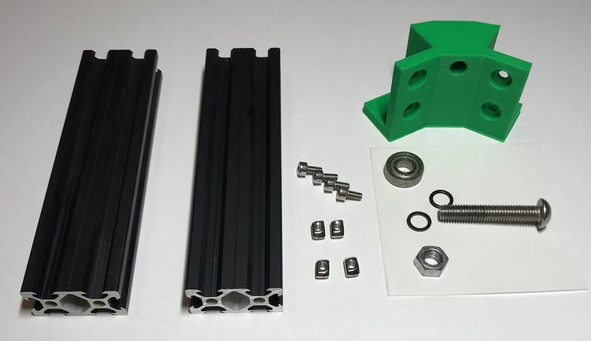×-
Вкрутите в центральное отверстие углового крепления винт М8Х35 и наденьте на него шайбу-подшипник D19-шайбу-гайку M8 и закрутите гайку до упора:
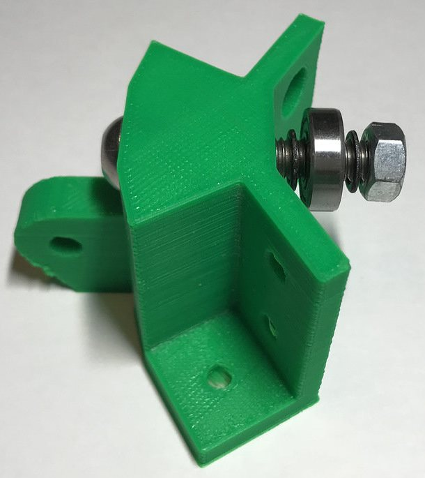×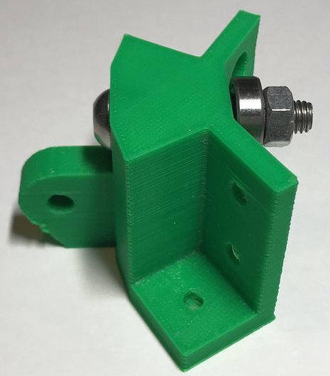× -
Прикрутите детали профиля 20Х40 к угловым креплениям с помощью винтов M4X8 и Т-гаек M4:
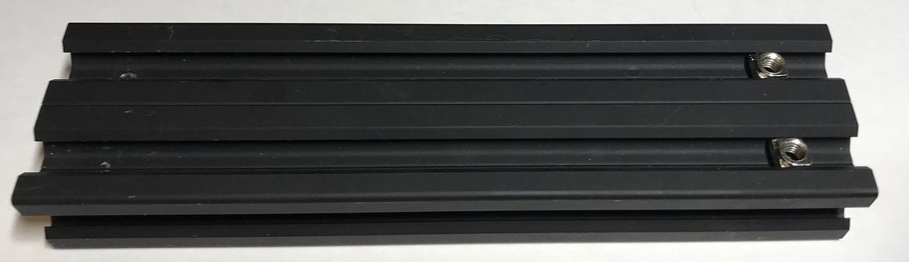×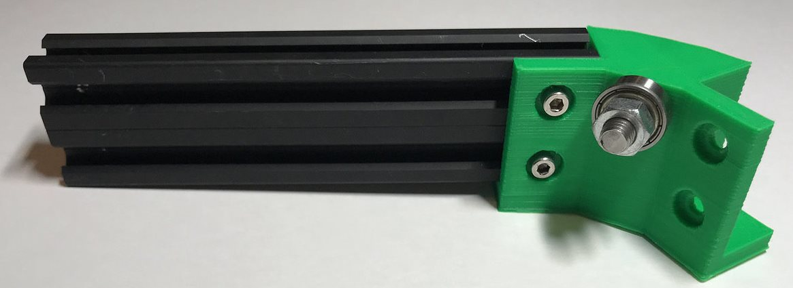× -
Повторите процесс сборки для получения второй боковой детали:
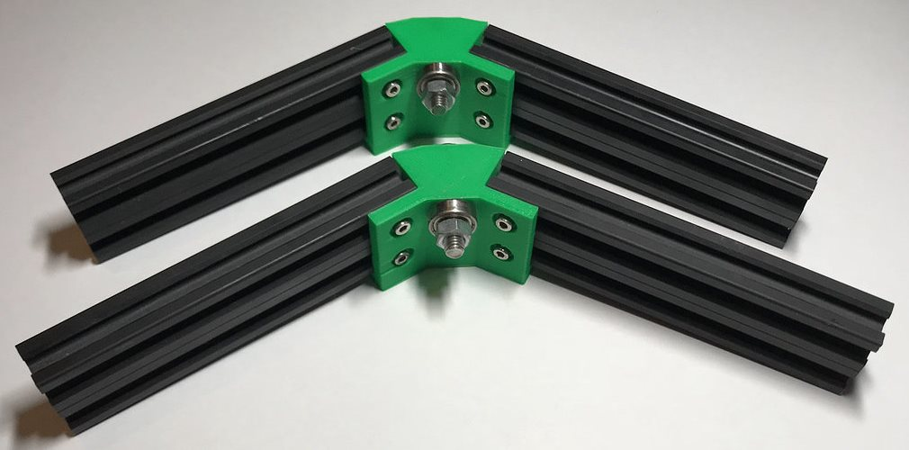×
-
Вкрутите в центральное отверстие углового крепления винт М8Х35 и наденьте на него шайбу-подшипник D19-шайбу-гайку M8 и закрутите гайку до упора:
-
Центральная деталь:
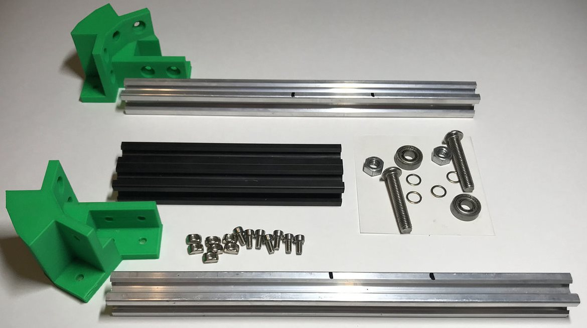×-
Соедините центральное левое и центральное правое крепление профилем 20Х40:
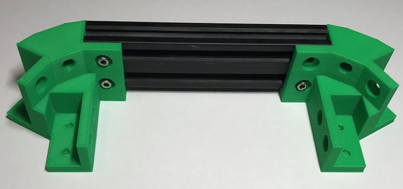× -
Повторите процесс сборки для получения аналогичной детали:
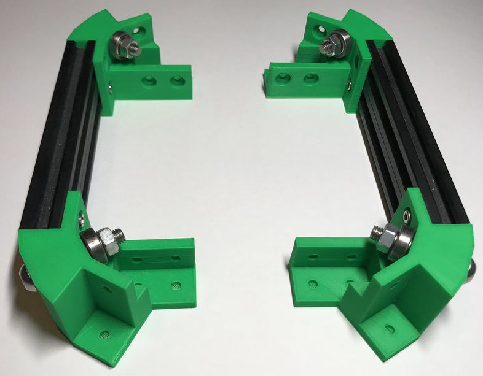× -
Вложите детали профиля 20Х20Х260 в пазы и закрепите винтами M4X8 и Т-гайками:
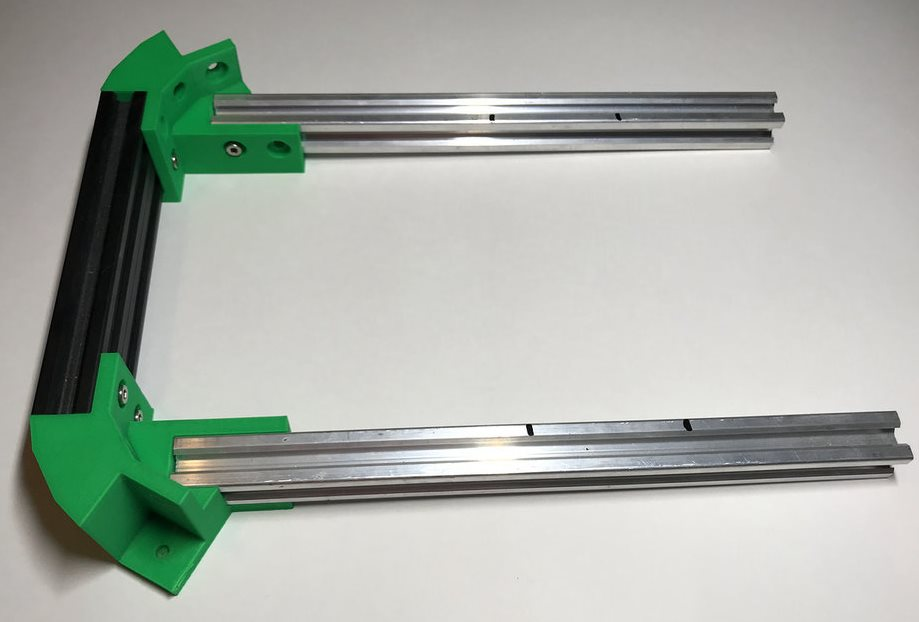× -
Закрепите вторую деталь на противоположных концах деталей профиля 20Х20Х260:
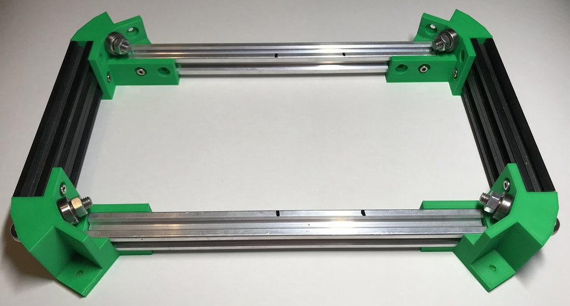× -
Закрепите на детали профиля 20Х20Х150 крепление двигателя и
два крепления центральной планки с помощью винтов M4X8 и
Т-гаек, закрепите шестерёнку
на вале двигателя и прикрутите его к креплению:
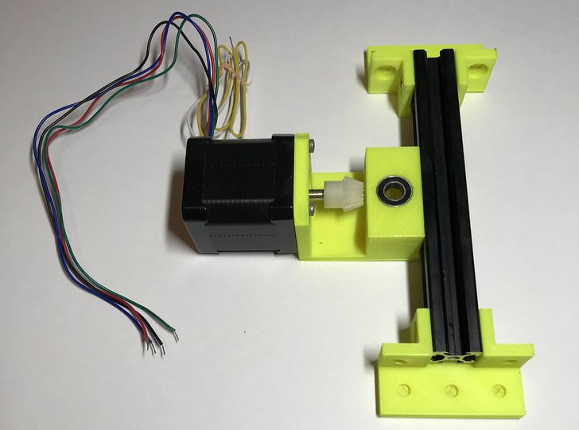× -
С помощью винтов M4X8 и Т-гаек прикрутите крепления центральной
планки к деталям профиля 20X20X260 (!соблюдая разметку!):
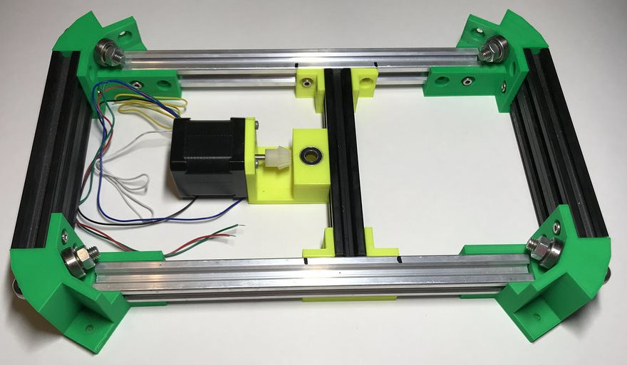×
-
Соедините центральное левое и центральное правое крепление профилем 20Х40:
-
Прикрутите боковые детали, собранные на шаге 1, к центральным соединителям:
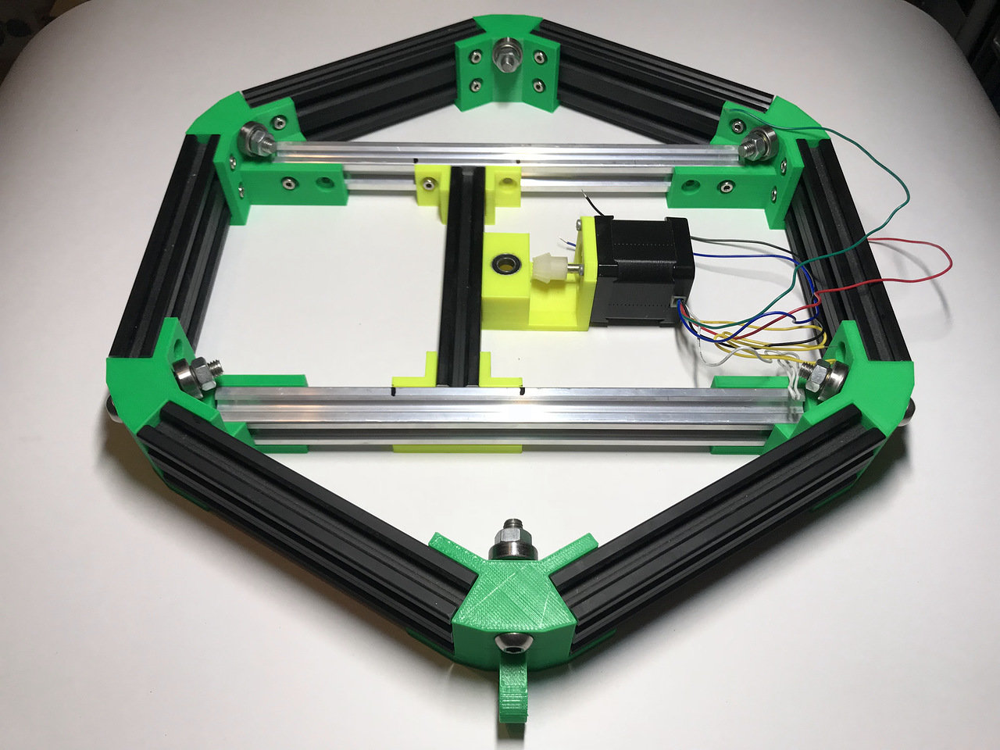
×
-
Hardware:
-
Подготовьте плату IskraNeo, драйвер шагового двигателя и ИК-приёмник:
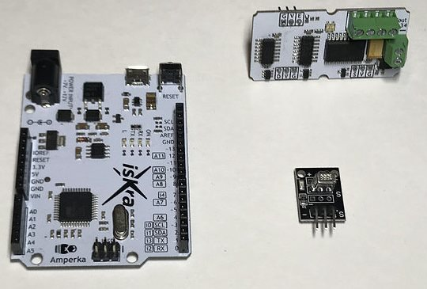× -
Подготовьте провода и клеммы для соединения устройств и подключения питания:
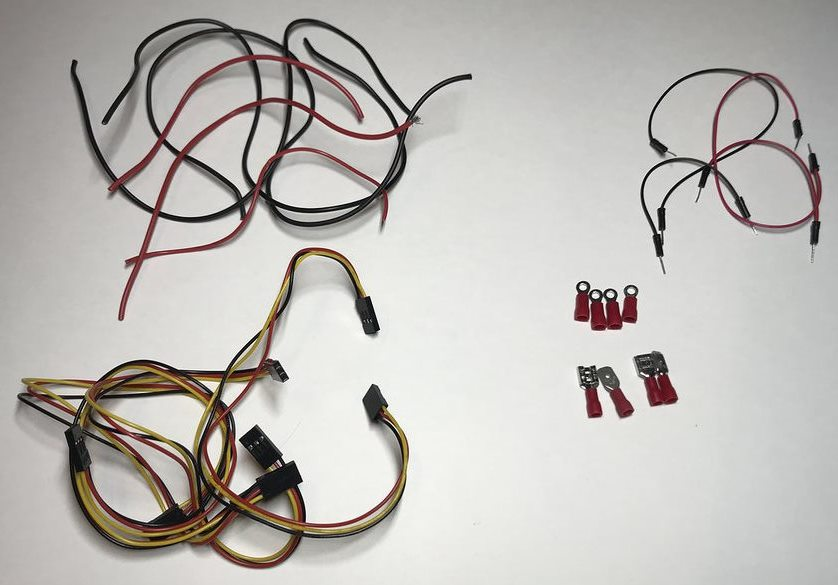× -
С помощью обжимных клещей и паяльника подготовьте следующие провода:
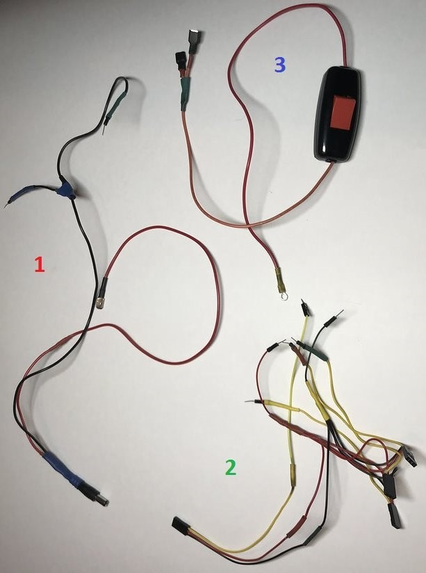×
1 Питание IskraNeo и N драйвера двигателя 2 Подключение драйвера двигателя и ИК-приемника к IskraNeo ( +/- x4 и 4 провода, передающие сигнал) 3 Кнопка включения платы и драйвера двигателя
-
Подготовьте плату IskraNeo, драйвер шагового двигателя и ИК-приёмник:
-
Подключите IskraNeo и драйвер двигателя к блоку питания согласно схеме:
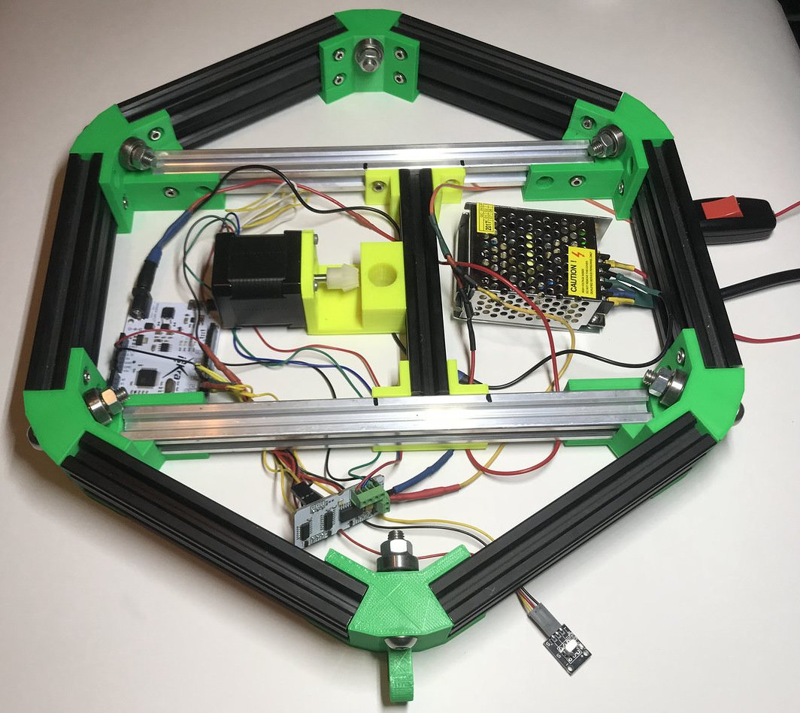× -
Вставьте в крепление двигателя подшипники D16.
-
Закрутите вал в крепление с шестеренкой и закрепите его на столешнице.
-
Вставьте столешницу с валом в подшипники: